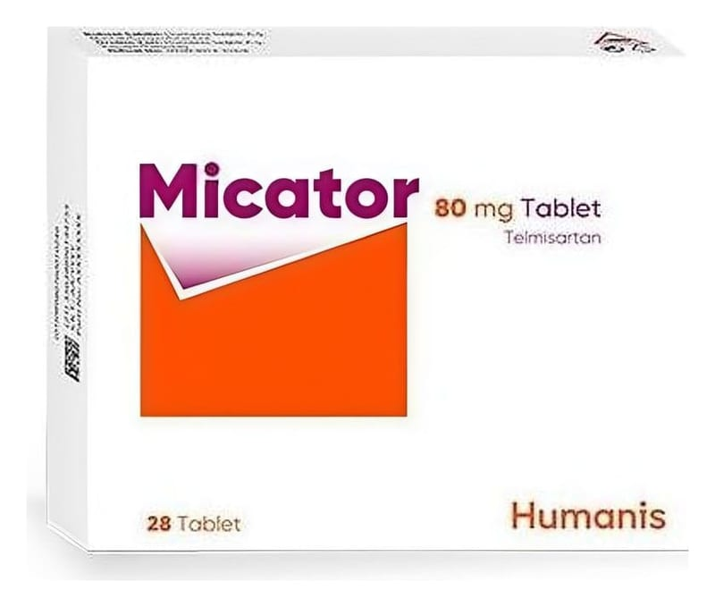

Micator-80-Mg-Tablet, Tablet, 84 Adet

Ne için kullanılır
KT · Bölüm 1• MİCATOR tablet formunda üretilmektedir. Tabletler beyaz veya beyazımsı, oval şeklinde, her iki yüzü çentiksizdir. • MİCATOR, 28 ve 84 tablet içeren blister ambalajlarda piyasaya sunulmaktadır. • MİCATOR'un etkin maddesi olan telmisartan, anjiyotensin-II reseptör antagonistleri adı verilen bir ilaç grubuna aittir. Anjiyotensin II vücutta bulunan bir maddedir; kan damarlarınızı daraltarak kanın bu damarların içinden geçmesini zorlaştırır ve kan basıncınızın yükselmesini sağlar. MİCATOR (telmisartan) anjiyotensin II'nin bu etkisini engelleyerek kan damarlarınızı gevşetir ve böylelikle kan basıncınızı düşürür. • MİCATOR, yetişkinlerde, esansiyel hipertansiyonun (yüksek kan basıncının) tedavisi için kullanılır. “Esansiyel” ifadesi, yüksek kan basıncının başka bir nedenle ortaya çıkmadığını gösterir.
Yüksek kan basıncı, tedavi edilmediğinde, kalp, böbrekler, beyin ve gözler gibi çeşitli organlardaki kan damarlarında harabiyete yol açabilir. Böylelikle, bazı durumlarda kalp krizleri, kalp veya böbrek yetmezliği, felç veya körlük ile sonuçlanabilir. Yüksek kan basıncı genellikle,
bu tür bir harabiyet ortaya çıkmadan önce belirti vermez. Bu nedenle, tansiyonunuzu düzenli olarak ölçtürüp normal sınırlar içinde olup olmadığını kontrol etmeniz çok önemlidir.
MİCATOR aynı zamanda, aşağıdaki durumlar nedeniyle risk altında bulunan erişkinlerde kalp-damar sistemiyle ilgili olayların (örn. kalp krizi ya da inme) önlenmesi için de kullanılmaktadır: - Kalbe ya da bacaklara giden kan miktarının azalması veya bloke olması, - İnme geçirmiş olma, - Şeker hastalığı (diyabet) riskinin yüksek olması Doktorunuz bu gibi olaylar açısından yüksek risk altında olup olmadığınızı size söyleyecektir.